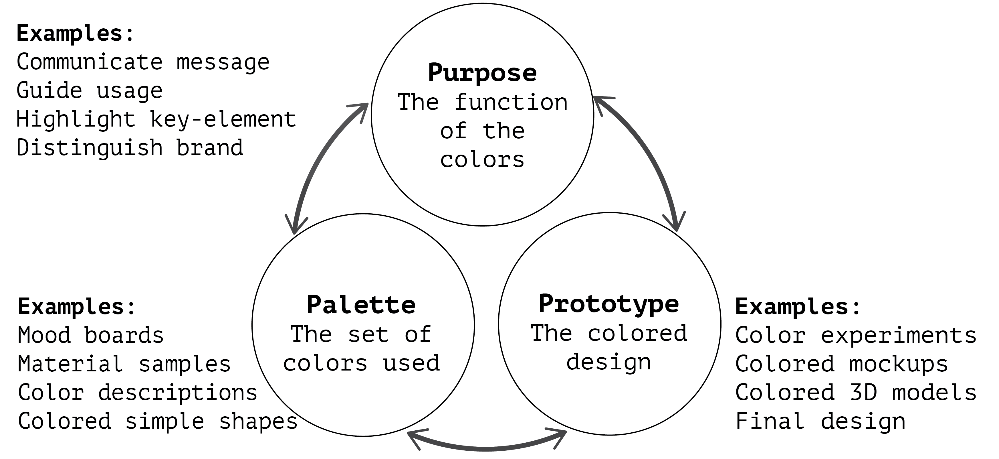

Palette, Purpose, Prototype: The Three "P"s of Color Design and How Designers Navigate Them
Authors
Lena Hegemann Antti Oulasvirta
Abstract
This paper contributes to understanding of a fundamental process in design: choosing colors. While much has been written on color theory and about general design processes, understanding of designers’ actual color-design practice and experiences remains patchy. To address this gap, this paper presents qualitative findings from an interview-based study with 12 designers and, on their basis, a conceptual framework of three interlinked color design spaces: purpose, palette, and prototype. Respectively, these represent a meaning the colors should deliver, a proposed set of colors fitting this purpose, and a possible allocation of these colors to a candidate design. Through a detailed report on how designers iteratively navigate these spaces, the findings offer a rich account of color-design practice and point to possible design benefits from computational toolsthat integrate considerations of all three.
Download Paper
PDFKey Findings
The Framework
We interviewed 12 designers and identified three decision spaces, the three "P"s, when choosing colors.
- Purpose – the message or function to be served/enriched by the colors
- Palette – the set of colors used in the design
- Prototype – the combination of the colors with the other components of the design
We found that designers initially explore the spaces but ultimately aim to align them such that the three converge to a coherent solution.
Design Strategies
- Ideating palettes: Inspiration for palettes often comes from the established meaning of color, metaphors, preexisting visuals, and applications dedicated to palette search. Moodboarding is a frequently used method.
- Experimenting with prototypes: Interviewees described experimenting with colors in prototypes both early on and later in the color-design process. While early mockups allow exploring colors freely, later prototypes may require iterations because the colors do not appear as expected.
- Exploring the purpose space: Surprisingly, designers actively explore the purpose space as they gather insights from their color experiments.
- Separating spaces: Considering purpose, palette, and prototypes separately is a strategy for directing focus during the design process and allows parallel development of color and form.
- Working with constraints and objectives: The scope of color choice varies greatly between projects, situating the designer as an interpreter who has to make sense of the objectives and constraints. Brand colors or style guides often limit the palette space, which sometimes simplifies the process but can also pose unique challenges.
- Overcoming Uncertainty: The subjectivity of color experience causes uncertainty about the purpose-palette-prototype match. Thus, designers must assess their color choices alongside others.
- Explaining colors: Designers use color theory and guidelines to rationalize their color ideation and discuss their choices with fellow designers and clients. Some devote considerable time to these discussions to support other team members' ownership of the colors.
- Navigating the fragmented tools space: Most interviewees combine multiple tools to create their colored designs. Usually, there is at least one tool specific to the type of design (e.g., graphic design tool, CAD tool) and separate tools to create or search palettes.
- Overcoming fixation: Nearly all interviewees were familiar with feeling stuck or unable to devise a novel color palette. Successful strategies against this were ways of changing perspective, such as getting a second opinion, seeking external inspiration, or iterating the purpose definition.